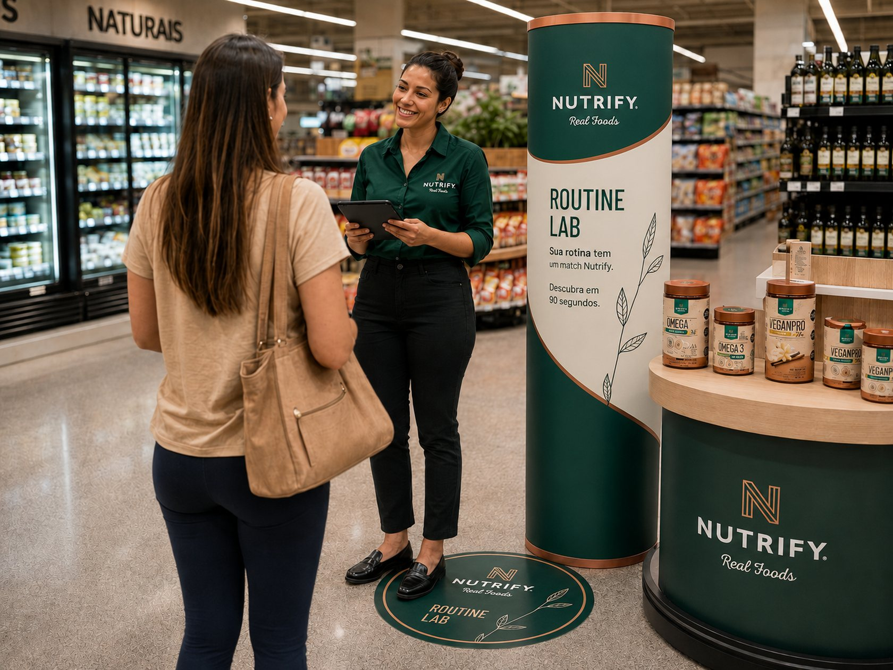
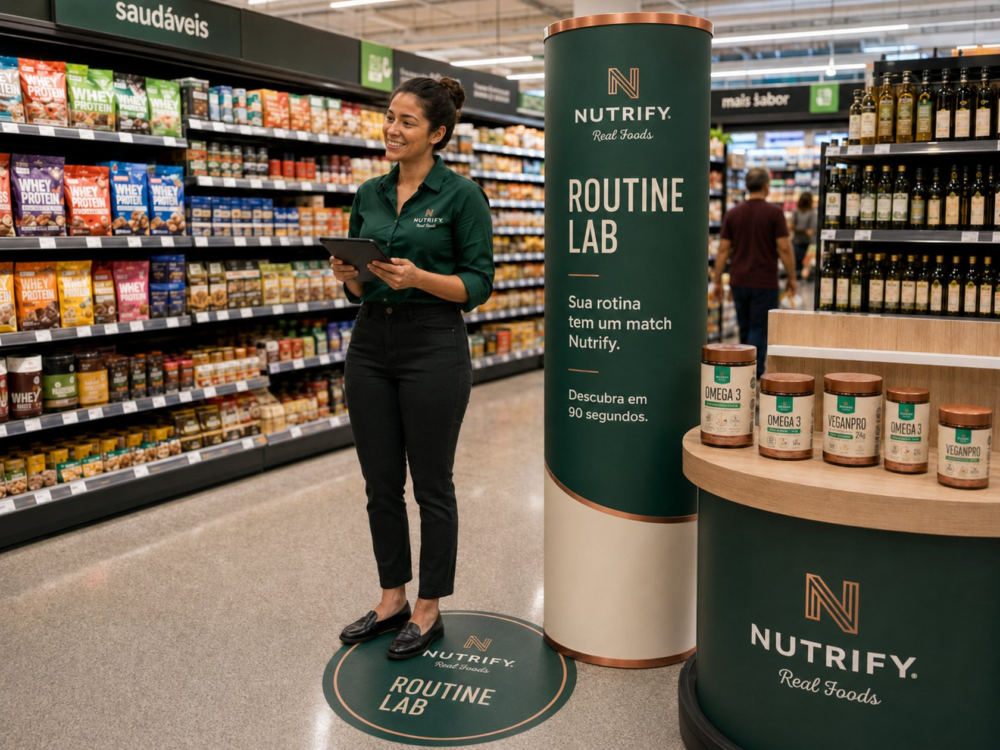
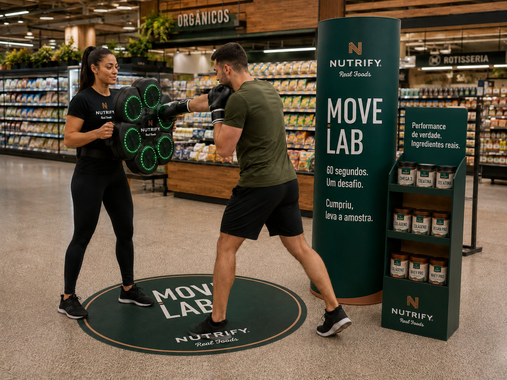
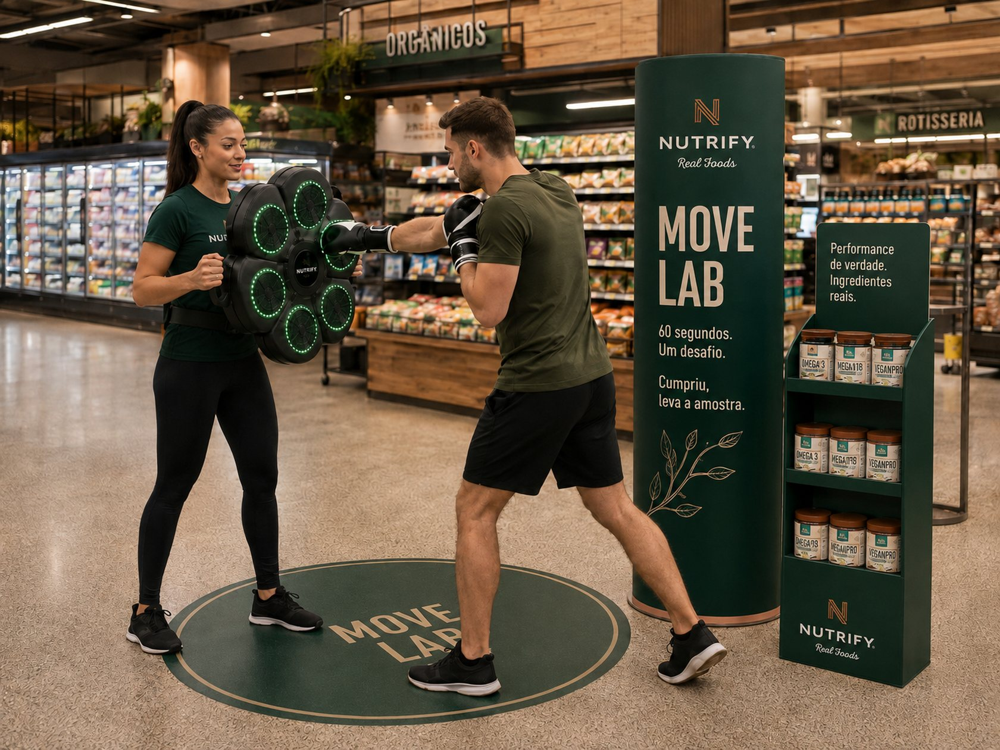

A categoria maispesquisada do paísé a menosexplicada da loja.
Suplemento se vende em busca, review e indicação. Na gôndola, o shopper fica sozinho com uma parede de potes.
0mi
buscas pela categoria no Brasil em um ano
Fonte: Social SA, Mercado de suplementos 2026
×ABERTURA
01 / 44
75 LAB × NutrifyProposta · Agosto 2026
NutrifyLab
Duas experiências de loja que transformam interesse em compra, com a equipe e a operação por nossa conta.
×NUTRIFY
02 / 44
O caminho de hojeSeis capítulos
Do problema ao primeiro piloto.
01O desafio que recebemos
02O contexto da categoria
03A tese
04A solução em dois formatos
05A operação e a medição
06O investimento
×AGENDA
03 / 44
Quem assina75 LAB
Ideia boaé a queacontece.
A 75 LAB é uma aceleradora de trade marketing. Nascemos dos dois lados do balcão: o varejo e a indústria.
Projetos aprovados0%
PDVs positivados15 mil+
Custo de produção−0%
Anos no trade+0
×NUTRIFY
04 / 44
Leitura do briefingO que ouvimos na reunião
01 O desafio
Seis frases que definem o projeto.
"Já temos agência de degustação e já tivemos de MPDV. Falta o pedaço da ativação completa."A lacuna
"Eu te passo o direcionamento e o produto. Vocês cuidam do resto."A carga operacional
"Não quero só interação. Quero conversão."O resultado
"A experiência tem que fazer sentido com o benefício daquele SKU."A conexão com o produto
"Preciso de relatório: pessoas, vendas, conversão. No começo, até semanal."A medição
"Piloto antes de escalar, e clareza total de quanto custa."O risco
×01 · O DESAFIO
05 / 44
DecupagemProblema aparente e problema real
O pedido é ativação. A dor é operação.
O que pareceFalta uma ideia de ativaçãoBuscar um formato novo, mais criativo, que chame atenção no corredor.
O que éFalta quem assuma a execução inteiraPromotora, supervisor, logística, material, montagem, armazenagem e o dado no fim. Hoje isso volta para a mesa do time interno.
Ideia boa não falta. Falta quem faça acontecer em 30 lojas, em três regiões, quatro vezes por ano.
×01 · O DESAFIO
06 / 44
Objetivo do projetoAtivações 2027
Um parceiro queassume a ativaçãointeira.
Estruturar a 75 LAB como braço estratégico e operacional das ativações de Integral, Nutrify e Darkness, assumindo desde o desenvolvimento da experiência até a execução no PDV, logística, gestão da equipe e mensuração dos resultados, com foco em conversão e geração de venda.
×OBJETIVO
07 / 44
O acordoO que muda para o seu time
Você passao desafio.A gente resolvetudo.
Não é uma lista de ideias de ativação. É uma operação que sai da sua mesa e volta como venda medida.
×O ACORDO
08 / 44
Contexto de mercadoCategoria suplementos no Brasil
02 O contexto
A categoria cresce rápido. O ponto de venda não acompanhou.
R$ 0,6 bimovimentados em 2025
+0%de crescimento no ano
R$ 0,8 biprojetados para 2030
Fontes: BRASNUTRI com dados Euromonitor · Future Market Insights (crescimento médio de 9,5% ao ano entre 2026 e 2036, Brasil é o 3º mercado que mais cresce no mundo)
×02 · O CONTEXTO
09 / 44
Onde o shopper compraParticipação por canal
O supermercado tem 15% da categoria
0%
dos suplementos saem do varejo alimentar
Farmácia48%
E-commerce24%
Supermercado15%
Especializada8%
O produto já está na gôndola. O que falta é alguém que traduza a categoria no único canal onde o shopper vai toda semana.
Fonte: pesquisa IFEPEC, participação por canal de compra de suplementos
×02 · O CONTEXTO
10 / 44
Jornada do shopperOnde a venda se perde
A intenção chega na loja. A decisão não.
AntesQuer cuidar da rotinaVê conteúdo, ouve indicação, decide que vai começar.
AntesPesquisa onlineCompara marca, preço e promessa fora da loja.
Na lojaChega no corredorDezenas de potes, rótulos técnicos, nenhuma orientação.Barreira: não sei qual é o meu
Na lojaAdia a decisãoLeva o de sempre, ou simplesmente não leva.Barreira: na dúvida, não compra
DepoisCompra onlineResolve em casa, fora do carrinho do supermercado.
O ponto de ruptura é curto e tem lugar certo: os segundos em frente à gôndola.
×02 · O CONTEXTO
11 / 44
Território competitivoOnde cada marca fala
Todo mundo fala de produto. Ninguém explica na loja.
PerformanceRotina e saúdeMarca fala pelo atletaMarca fala pelo rótuloMax TitaniumIntegralmédicaGrowthDuxEssential NutritionTerritório livre: clean label explicado no varejo alimentarNutrify
Leitura 75 LAB a partir do posicionamento público das marcas · rankings de categoria 2026
×02 · O CONTEXTO
12 / 44
Tendências aplicáveisO que já dá para usar agora
Quatro movimentos que cabem neste projeto.
PHYGITALTela no corredorO conteúdo que existe online entra na loja, no tempo do shopper.
PERSONALIZAÇÃORecomendação por rotinaEm vez de um folheto igual para todos, uma rota de produto por pessoa.
SAMPLING COM GATILHOAmostra que se conquistaA amostra deixa de ser distribuída e passa a ser merecida.
MENSURAÇÃOAtivação com dadoCada interação vira registro, e cada loja vira comparação.
Nenhuma delas depende de tecnologia que a Nutrify ainda não tenha. Todas dependem de execução.
×02 · O CONTEXTO
13 / 44
A teseCategoria suplementos
Suplementos podemser explicadosdiretamente noponto de venda.
Para encantar o shopper temos que ir além da exposição. Alguém precisa traduzir o portfólio no tempo do supermercado.
×NUTRIFY
14 / 44
A oportunidadeComportamento de shopper
0%
já mudaramalgum hábito.
Metade delas já procura fibras e vitaminas na compra da semana. A intenção existe. Falta o contexto na hora da escolha.
×NUTRIFY
15 / 44
A propostaUma plataforma · dois formatos
Apresentamos a soluçãoNutrifyLab
Formato 01 · lojas menoresRoutine Lab 90 s
Formato 02 · lojas maioresMove Lab 60 s
×NUTRIFY
16 / 44

Formato 01 · lojas menores
RoutineLab
Sua rotina tem um match Nutrify. Descubra em 90 segundos.
Imagens meramente ilustrativas, não são imagens finais
×ROUTINE LAB
17 / 44
Routine LabTempo de experiência
0seg
da abordagemao match.
Perguntas4
Cadastro0
Promotor1
Passos até o produto8
×ROUTINE LAB
18 / 44
Routine Lab em lojaEstudo de ambientação
Ocupa o corredorsem fechar a loja.
Totem cilíndrico, balcão de exposição e adesivo de piso. Um promotor conduz tudo.
Abordagem no corredor
Quiz no tablet
Zona de conversão ao lado

×ROUTINE LAB
19 / 44
Routine LabDa abordagem à compra
Quatro respostas.Uma rota de produto.
PASSO 01PararTotem, adesivo de piso e uma frase.
PASSO 02ResponderQuatro perguntas de rotina no tablet.
PASSO 03DescobrirO momento Nutrify da pessoa, com 2 a 3 produtos.
PASSO 04ComprarLevada até a exposição, ao lado.
×ROUTINE LAB
20 / 44
Routine Lab · demonstraçãoFunciona agora, nesta tela
Experimenteagora.
É o mesmo fluxo que roda no tablet da loja. Toque nas respostas e chegue ao seu momento Nutrify.
Perguntas4
Tempo médio90 s
Cadastro0
Imagens meramente ilustrativas, não são imagens finais
Sua rotina tem um match
4 perguntas · 90 segundos · sem cadastro
01 / 04
Seu momento Nutrify
×ROUTINE LAB
21 / 44
Routine Lab · renderEstrutura em loja
Cabe em1,4 m².
Área1,2 × 1,2 m
Altura do totem2,0 m
Montagem< 20 min
Transporte1 case
Imagens meramente ilustrativas, não são imagens finais
×ROUTINE LAB
22 / 44
Routine LabO que roda por dia
0
pessoas por dia, por loja
Equipe1 promotor
Tempo por pessoa2 a 3 min
Energia1 ponto 127/220 V
InternetRoda offline
×ROUTINE LAB
23 / 44
Formato 02 · lojas maiores
MoveLab
60 segundos. Um desafio. Cumpriu, leva a amostra.
Imagens meramente ilustrativas, não são imagens finais
×MOVE LAB
24 / 44
Move LabTempo de experiência
0seg
e umaplateia.
Quem está na fila entende a dinâmica antes de ser abordado. A abordagem fica mais fácil a cada rodada.
×MOVE LAB
25 / 44
Move Lab em lojaEstudo de ambientação
Quem passapara para ver.
Totem, tapete de zona ativa e a prateleira de amostras a poucos passos. A plateia se forma sozinha.
Desafio em andamento
Prateleira de amostras

Equipe em campo

×MOVE LAB
26 / 44
Move LabDo desafio à compra
Movimento viraatenção pública.
PASSO 01DesafiarAlvos iluminados, 30 a 45 segundos de jogo.
PASSO 02GanharCumpriu o desafio, leva uma amostra Nutrify na hora.
PASSO 03EscolherA pessoa escolhe o território que combina com ela.
PASSO 04ComprarLevada até a exposição, ao lado.
×MOVE LAB
27 / 44
Move Lab · a recompensaSampling na hora
Cumpriu o desafio,leva a amostra.
A amostra entra na mão da pessoa enquanto a experiência ainda está acontecendo. Da amostra até a gôndola são poucos passos.
Imagens meramente ilustrativas, não são imagens finais
×MOVE LAB
28 / 44
Move LabO que roda por dia
0
pessoas por dia, por loja
Equipe1 promotor
Tempo por pessoa5 a 6 min
Área1,5 × 1,5 m
HigienizaçãoEntre cada uso
×MOVE LAB
29 / 44
A divisão do trabalhoQuem faz o quê
Sua equipe decide. A nossa executa.
Fica com a Nutrify
01Direcionamento
02Produto e mix
03Objetivo comercial
04Estratégia de marca
Assume a 75 LAB
01Experiência e conteúdo
02Promotora e supervisor
03Materiais e montagem
04Logística e armazenagem
05Execução em loja
06Relatório e dados
×A DIVISÃO
30 / 44
A operaçãoEquipe e retaguarda
A equipe já estáno contrato.
EM LOJAPromotorUm por PDV, uniformizado e treinado antes de cada onda.
NA REGIÃOSupervisorAudita execução, estoque e evidências loja a loja.
NA RETAGUARDACoordenaçãoEscala, logística, insumos, uniformes e armazenagem.
NO SISTEMAApp e BIRegistro em campo, dashboard e relatório por loja.
Refeição, deslocamento, insumos e licença de app entram no mesmo pacote. Você não abre um segundo orçamento para colocar gente na rua.
×A OPERAÇÃO
31 / 44
A conversãoDistância até a exposição
0–3m
de distância da ação
Da ação atéo ponto natural.
A exposição Nutrify fica a até 3 metros da experiência, no ponto natural da categoria. Quanto menor a distância, mais fácil atribuir e converter.
×NUTRIFY LAB
32 / 44
Plano de rastreamentoO ponto cego da ativação
A ação acabou.E o material, onde está?
Totem, tablet, equipamento e display saem do centro de distribuição e somem do radar. Sem prova de execução, a ativação vira relato.
×05 · A OPERAÇÃO
33 / 44
Rastreamento · modalidade 01One Shot
One Shot: a prova de que montou.
NA PEÇAQR impressoCada totem e cada display sai de fábrica com um código próprio.
NA MONTAGEMPromotor registraLê o QR, tira a foto da fachada e confirma a loja.
NO SISTEMAGPS e horárioLocal, data e hora ficam carimbados no registro.
NO PAINELEvidênciaPositivação por loja, com foto, dentro do painel de instalações.
Leitura pontual: responde montou, onde, quando e com que cara ficou.
×05 · A OPERAÇÃO
34 / 44
Rastreamento · modalidade 02On Timing
On Timing: o filme, não a foto.
LocalizaçãoContínua
PermanênciaPor loja
MovimentaçãoHistórico
AlertaPeça parada
Rastreamento operado na plataforma Códice, da própria 75 LAB. Escopo e tecnologia por peça são definidos no projeto técnico.
×05 · A OPERAÇÃO
35 / 44
MensuraçãoTrês níveis
Você vai saberquanto vendeu.
SE HÁ POSCupomConversão direta, item a item, por loja e por hora.
SE NÃO HÁQR + notaA pessoa registra a nota e o sistema confirma a compra.
SEMPREEstoqueContagem de início, reposição e fim de operação.
Um funil único compara formatos, redes, lojas e dias, do nacional até a hora da compra.
×NUTRIFY LAB
36 / 44
BenefíciosQuem ganha o quê
Uma ação. Seis pessoas satisfeitas.
×05 · A OPERAÇÃO
37 / 44
Resultados esperadosMetas de piloto, não promessa
O que vamos perseguir na primeira onda.
Abordagem que vira participação25 a 35%
Quem começa e conclui a experiênciaacima de 85%
Conversão assistida na zona de compra12 a 20%
Disponibilidade do equipamento em campoacima de 98%
Positivação registrada com evidência100%
Estes são alvos de trabalho do piloto, não resultado histórico. O número real sai das duas primeiras lojas e recalibra a onda seguinte.
×05 · A OPERAÇÃO
38 / 44
CronogramaDa aprovação à rede
0
semanas até a escala
Semanas 1–5Imersão, design e sistema
Semana 6Produção
Semana 7Piloto · 2 lojas
Semanas 8–10Onda 1 · 8 lojas
Semanas 11–16Escala · 20 lojas
×NUTRIFY LAB
39 / 44
InvestimentoOperação completa por loja e por dia
R$1.008,84
por loja / por dia de ativação
Um número.Tudo dentro.
Promotor, supervisor e coordenaçãoincluso
Uniforme, insumos e higienizaçãoincluso
Refeição e deslocamentoincluso
App de campo, BI e dashboardincluso
Experiência, materiais e montagemincluso
Projeto completo · 30 lojas · 96 diáriasR$ 96.848,89
Piloto · 2 lojas · 6 diáriasR$ 6.053,06
Valores com fee, BV e impostos já aplicados. Não inclui mídia do varejista, descontos ou cashback, nem integrações de POS não dimensionadas.
×INVESTIMENTO
40 / 44
Depois do pilotoAtivações 360
Integral.Nutrify.Darkness.
Um só parceiro de ativação para as três marcas, com planejamento e execução centralizados. Uma marca por trimestre, nas quatro ondas do ano.
Ondas por ano4
Marcas atendidas3
Lojas por onda30
RegiõesSE · NE · CO
×ATIVAÇÕES 360
41 / 44
Próximo passo75 LAB × Nutrify
Duas lojas.Duas semanas.Um número real.
Começamos pelo piloto, medimos tudo e escalamos pelo que converter. Escolha as lojas. O resto é com a gente.
×NUTRIFY LAB
42 / 44
EncerramentoDe volta ao começo
Continua sendoa categoria maispesquisada do país.Agora com resposta na loja.
Duas lojas, duas semanas e um número real. Depois disso, a conversa deixa de ser sobre ideia e passa a ser sobre escala.
×06 · O FECHO
43 / 44
75 LABAceleradora de trade marketing
A empresaRazão social75 LAB Estratégia, Design e Produção LtdaCNPJ55.470.982/0001-77EndereçoRua Jurubatuba, 1350, conjunto 913, CentroCidadeSão Bernardo do Campo, SP, CEP 09725-000Telefone(11) 8864-8434E-mailcontato@75lab.com.brSite75lab.com.brInstagram@setecincolab
ApresentaçãoApresentadorCaique BeckerCargoCofundador e Head de TradeE-mailcaique.becker@75lab.com.brClienteNutrify Real Foods · Grupo IntegralProjetoNutrify Lab, ativações 2027DataOutubro de 2026
 ×ABERTURA
×ABERTURA

 ×AGENDA
×AGENDA